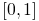
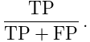
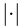
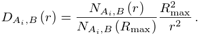
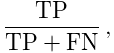
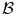
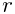
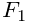
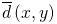

Generator of simulated data
ThunderSTORM is capable of generating a sequence of SMLM-like images
in which the ground-truth positions of the molecules are known. This
allows users to perform Monte Carlo simulations [4, 3]
and to quantitatively evaluate the performance of applied localization
algorithms by calculating, e.g., the Jaccard index or  score
using the Performance evaluation plugin.
In addition to the image size and sequence length, users can specify
the intensity, imaged size, and spatial density of the generated molecules.
The resulting images can be subjected to sample drift. Noise in the
generated images simulates the behavior of CCD or EMCCD cameras.
score
using the Performance evaluation plugin.
In addition to the image size and sequence length, users can specify
the intensity, imaged size, and spatial density of the generated molecules.
The resulting images can be subjected to sample drift. Noise in the
generated images simulates the behavior of CCD or EMCCD cameras.
Image formation
For each frame, we first create an ideal, noise free, SMLM-like image to simulate the expected number of photons detected in each camera pixel. Image formation starts by creating a list of molecules with FWHM and intensity chosen randomly in user-specified ranges, and with random positions of molecules given by a user-specified spatial density (see below). Users can also specify any of the implemented PSF models, including 3D models, to create the simulated images of molecules. The generated molecules are added sequentially to the final image similarly as in the Gaussian rendering method. A user-specified offset is added to the generated image sequence to simulate photon background. Alternatively, a gray-scale image, in which each pixel value is normalized to the interval , can be used as a weighting factor of the offset level in different parts of the generated images to simulate an irregular background as might be encountered in real samples.
In order to simulate the photon counting process in the generated images, each pixel value expressed in photons is modified by a Poisson-distributed random number. The data generator can optionally simulate EM gain of EMCCD cameras. In this case we use a stochastic model described in [1], where the electron multiplication is modeled by the Gamma distribution . The shape  is given by the number of photons detected in the simulated CCD register and the scale  is given by the user-specified value of gain.
Finally, the signal in the camera register is digitized by converting the photons to digital counts. The CCD sensitivity (in photons per A/D count), and the camera digitizer offset (in A/D counts) are user-specified in the camera setup, as well as the camera pixel size (in nanometers) as projected to the sample plane.
Fixed or spatially varying density of molecules
Users can specify a fixed or spatially varying density of simulated molecules in the generated images. The variability is achieved by a user-supplied gray-scale mask , in which each pixel value is normalized to the interval and used to represent the weighting factor. The average number of molecules at a given integer pixel position  is then computed as
where  is the camera pixel size as projected to the sample plane, and  is the maximum spatial density of molecules per unit area as specified by users.
The procedure for generating molecular positions follows the spatial Poisson point process [2]. Thus for each value , a random number of events (molecules) is created in the pixel using a Poisson random number generator. Molecular centers are placed uniformly and randomly within that pixel.
Note that the mask should be at least the same size as the desired super-resolution image in order to preserve high resolution in the final reconstruction. The coordinates of the molecular centers are down-scaled appropriately.
Additional sample drift
The generated molecular positions in the image sequence can be subjected to a lateral sample drift. Users need to specify the speed and direction of the drift, which is constant throughout the image sequence.
See also
References
- [1] (2013) A stochastic model for electron multiplication charge-coupled devices–from theory to practice.. PLoS ONE 8 (1), pp. e53671. External Links: Document Cited by: Image formation.
- [2] (1979) The Advanced Theory of Statistics. London: Charles Griffin. Cited by: Fixed or spatially varying density of molecules.
- [3] (2011) Minimizing detection errors in single molecule localization microscopy. Optics Express 19 (4), pp. 3226–35. External Links: Document Cited by: Generator of simulated data.
- [4] (2010) Real-time computation of subdiffraction-resolution fluorescence images. Journal of Microscopy 237 (1), pp. 12–22. External Links: Document Cited by: Generator of simulated data.
![[LOGO]]()